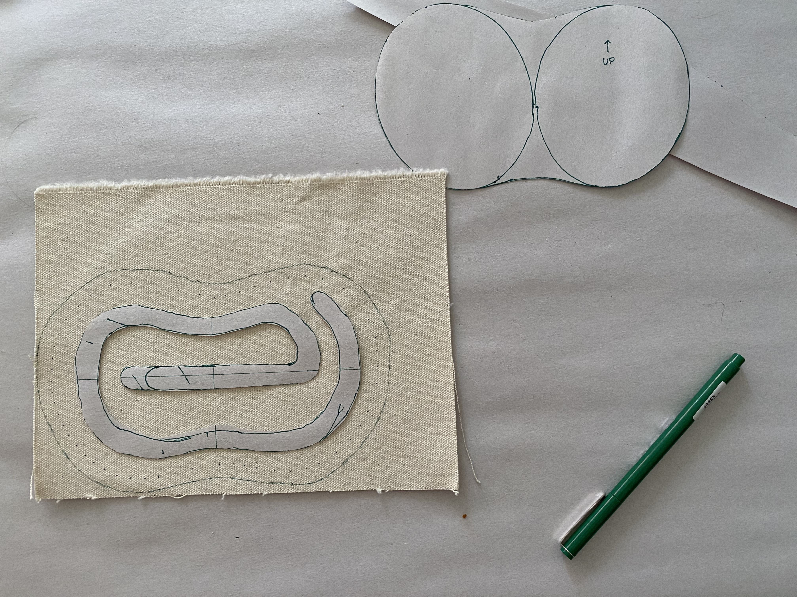

ELI HARRELL
Embroidered canvas headphones case
a hand ~ 3D project
click images to view them at full size.
| The completed case alongside a matching tablet sleeve. Embroidered details on top flap, with stylized 'e' filling the front as a clear window, only visible when case is open. Bow completes the closure. |

|
| Working at 1:1 scale with paper and canvas. |

|
| Pattern design. |  |